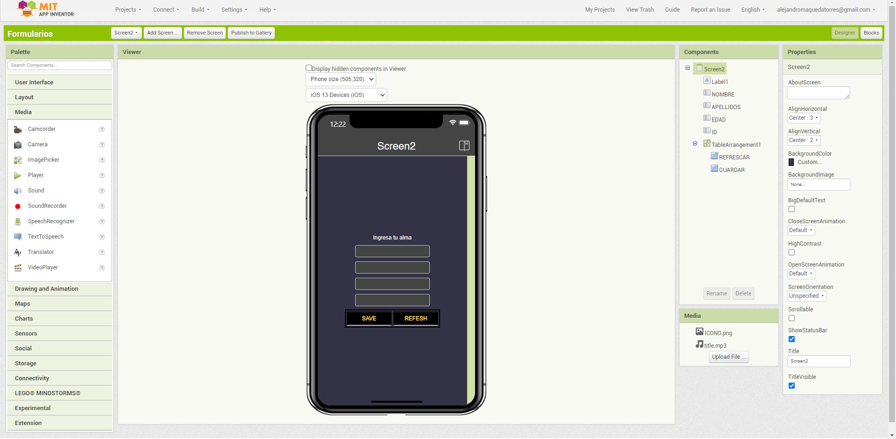

MIT APP INVENTOR, ¿Qué es?
es una página creada por el MIT para poder crear aplicaciones moviles.
Tiene un enfoque educativo pero las aplicaciones que se pueden hacer son bastante complejas.
a continuación un ejemplo de como se ve la pagina

Podemos ver el espacio simulado en un celular digital.
tambien están todos los elementos disponibles para hacer una app
En la imagen vemos la app que hice para mi celular